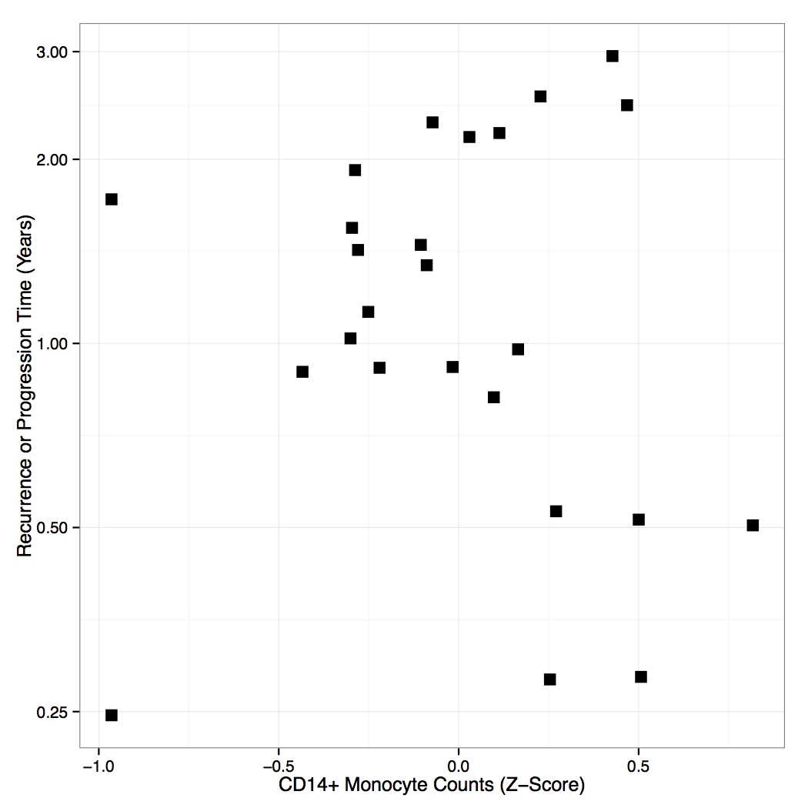
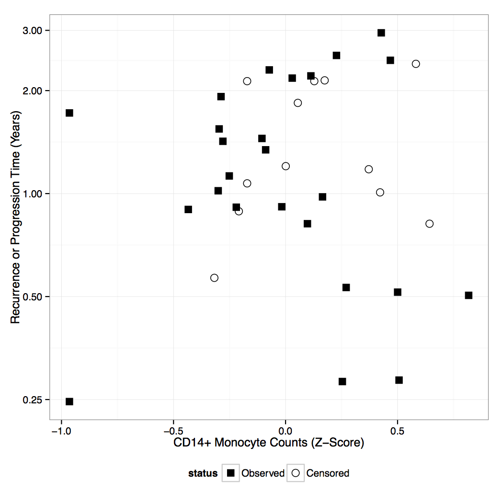
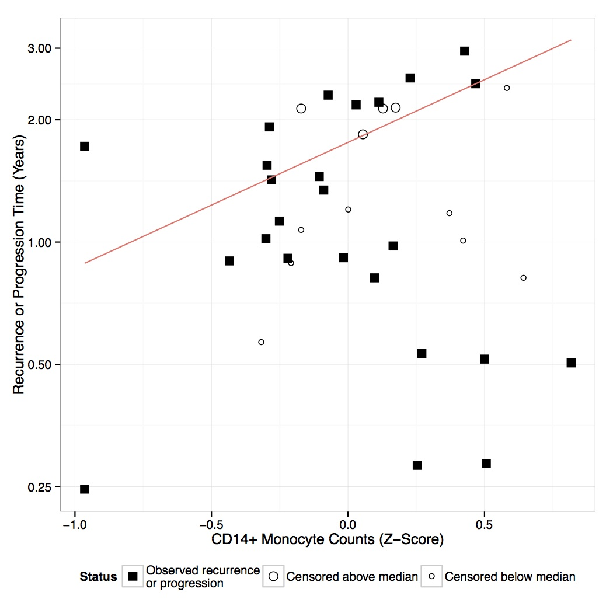
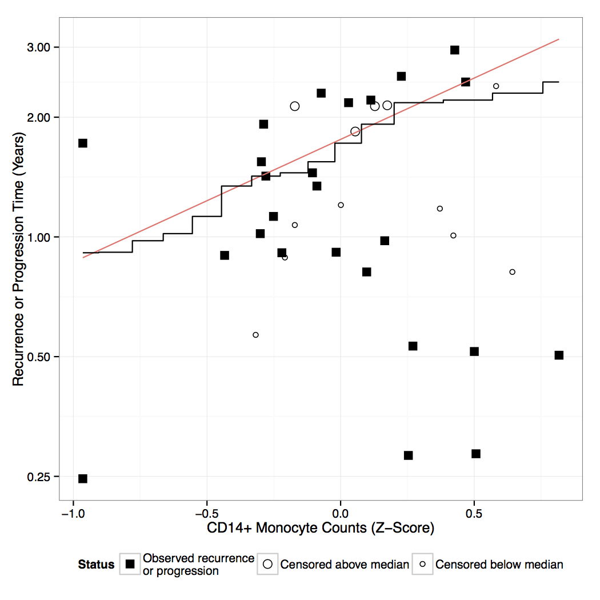

# The Data * Courtesy of Erin Costanzo * N=37 patients * 25 patients progress or relapse * Response: Time to progression * Covariates: various immune measures (e.g. NK cell count) * Also adjusted for: stage and risk --- # Goals * Investigate immune recovery's relationship to progression-free survival * Plot standardized immune measures vs. survival time (e.g. NK cell count vs. progression-free survival) * Interested in median survival time * Visual assessment of Cox model? --- <center>  </center> --- <center>  </center> --- <center>  </center> --- <center>  </center> --- <center> </center>